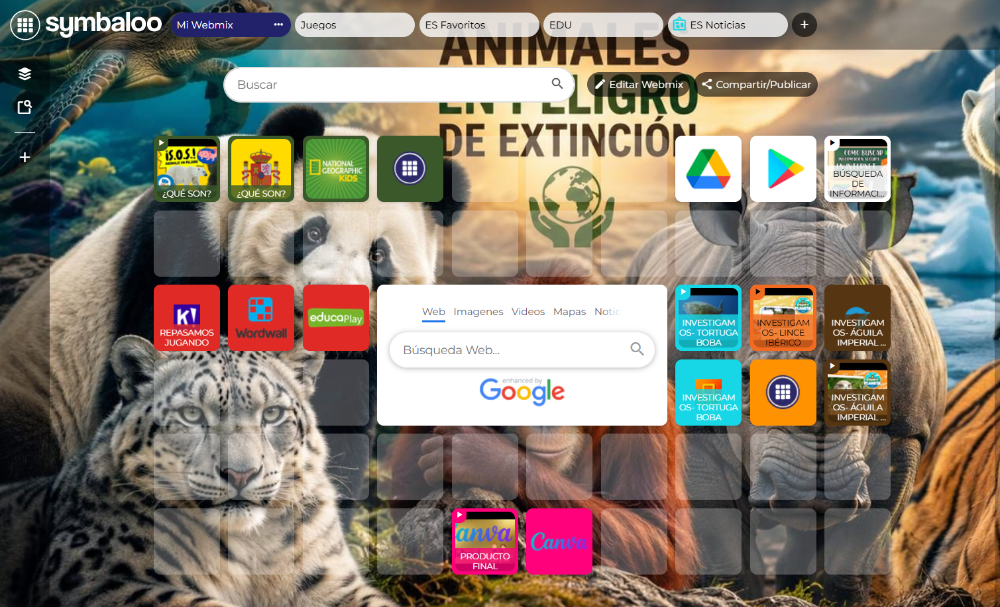
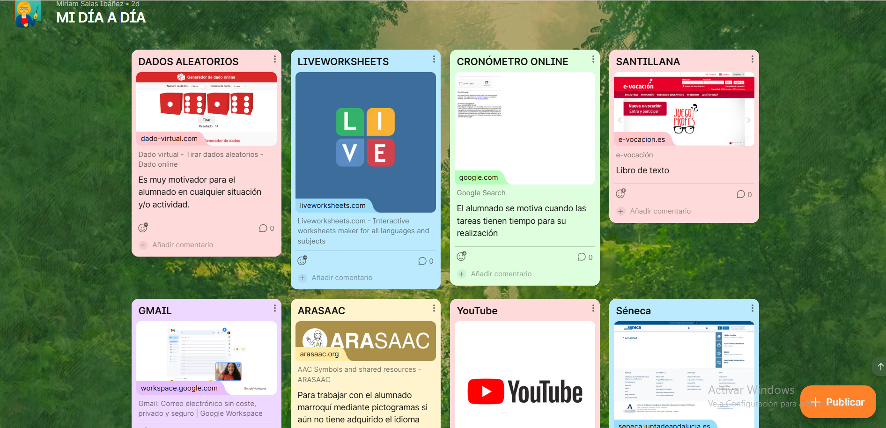

Recursos y curación de contenidos
Para trabajar la competencia digital del alumnado y fomentar el uso de las TIC en el aula, se proponen estas dos herramientas digitales motivadoras e interactivas.
Por un lado, el alumnado utilizará recursos guiados que facilitarán la búsqueda segura y organizada de información durante el proyecto.
Por otro lado, estas herramientas también permitirán al docente estructurar y organizar los materiales, actividades y recursos necesarios para el desarrollo de las clases de manera dinámica y accesible.
*Herramienta para el alumnado:
El alumnado utilizará diferentes recursos digitales guiados para buscar información segura y fiable sobre animales en peligro de extinción. Para ello, se usará la herramienta digital Symbaloo
*Herramienta para el/la docente:
En cuanto a la organización docente se ha llevado a cabo la herramienta Padlet, la cual se utilizará para organizar recursos, actividades y materiales relacionados con el proyecto.

